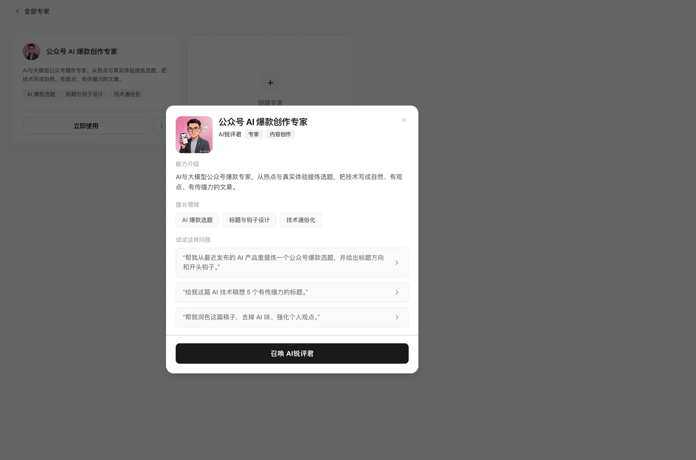
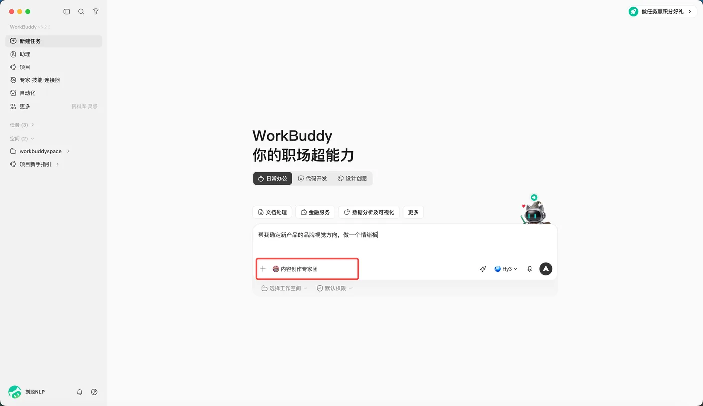
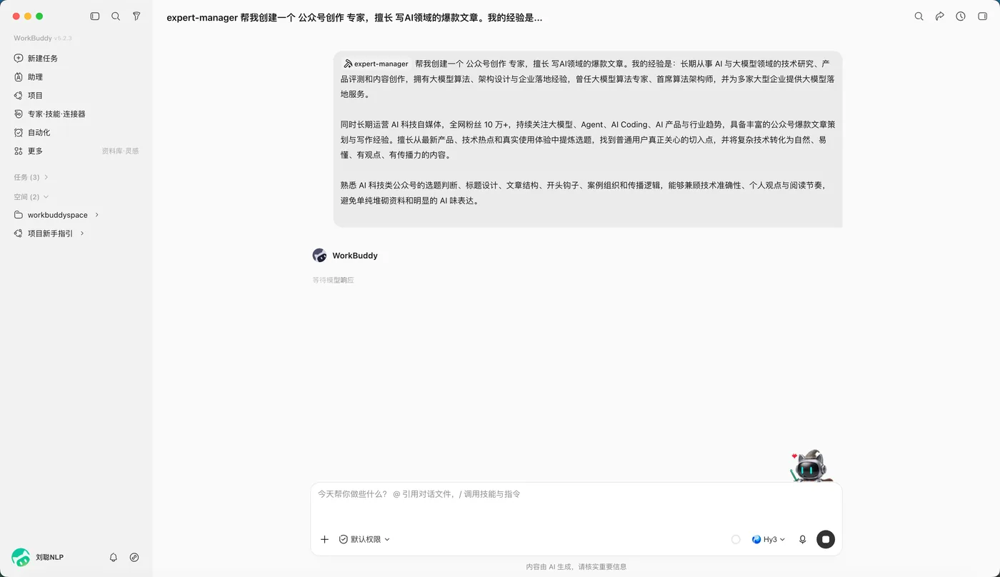

本课导读模块二
上一课你给 AI 装上了「手艺」。但同一个工具，站在不同人的角度用，结果差很远。 这一课学专家——让 AI 带着一个明确的岗位和立场干活； 事情复杂的时候，还能叫上专家团一起做。
学习目标
学完这一课，你应该能——
- 说出「专家」和「专家团」分别是什么机制，各解决哪类问题；
- 独立完成一次「召唤专家 → 派活 → 验收」的完整操作；
- 用一句话判断一件事该用普通对话、技能、专家还是专家团；
- 自己创建 1 个专家，配置项写得对、边界说得清；
- 指出一个 AI 协作流程里哪几步必须由人来做。
知识点导航
一、专家：有岗位的 AI 同事概念
WorkBuddy 本身是个「什么都能干」的通用助手。但什么都能干，往往意味着什么都干得一般。
专家是「角色切换」机制——用「人设 + 方法论 + 工具链」， 让它以某个领域专家的身份来做事。
| 普通 WorkBuddy | 专家 | |
|---|---|---|
| 它是什么 | 通用 AI 同事 | 有明确岗位和专业经验的 AI 同事 |
| 分析销售数据 | 读数据、出图、总结趋势 | 先问清业务目标，再定指标、查数据质量、找异常、给可执行建议 |
| 写小红书文案 | 关注内容本身 | 还会考虑选题、标题、开头留存、种草逻辑、互动设计 |
差别不在工具，在它有没有一套既定的专业流程。


做完你手上会有：一份「条款原文 → 风险点 → 建议改法」的审阅意见。
下面这份实习协议条款有问题，我们要请一位「懂行的人」来看。
第 1 步 · 把下面这段协议条款存成文件（在 wb-试验/input 里新建 实习协议.txt）：
实习协议（节选）
第四条 责任划分
实习期间，学生因工作原因发生意外伤害的，由学生自行承担责任。
企业不承担任何赔偿责任。
第五条 工作时间
实习学生应服从企业安排，工作时间由企业根据业务需要确定，
学生不得提出异议。
第六条 解除条件
企业有权根据经营情况随时解除本协议，无需提前通知，
也无需说明理由。
第七条 报酬
实习报酬为每月 800 元，于实习结束后一次性支付。第 2 步 · 找「法务 / 合同 / 文书审核」方向的专家：左侧栏点「专家·技能·连接器」， 顶部切到「专家」，按这个方向找——列表里第一条符合的就用它， 不要反复比较。分类里没有就用关键词搜「合同审查」「法务」。
点开卡片会看到这样一页——先读「能力介绍」和「擅长领域」，再决定用不用它：

最下面是「召唤 XX」按钮，点了就把它挂到输入框上方开始干活。
这三处也是你验收自己造的专家时的检查项——见后面的实操 ③。
截图整理自 WorkBuddy 实战蓝皮书，仅作课堂讲解用；界面随版本更新，以你实际使用的版本为准。

第 3 步 · 派活（把下面这句发给它）：
请逐条审阅我上传的实习协议，站在保护学生的立场，
找出对实习学生不利的条款，按「条款原文 → 风险点 → 建议改法」三列输出。第 4 步 · 做到这三条，就算做完了
- 四条条款各有一条意见第四、五、六、七条都要点到。
漏了某一条：补一句「第四条到第七条逐条都给意见，不要只挑最严重的」，再发一次。 - 意见有明确立场指出的是「对学生不利」，而不是泛泛的「建议注意风险」。
说得太笼统：指令里那句「站在保护学生的立场」不能省——把它单独拎出来再发一次。 - 引用的条款原文一字不差把它引用的原文跟上面素材里的原文逐字对一遍。
它改了字：⚠️ 这就是它编了。让它重新引用，或在指令末尾补一句 「引用条款必须逐字照抄，不许概括或改写」。
要交的成果：这份审阅意见（三条不合规条款 + 改法）。
二、专家团：一支会自己分工的队伍机制
一件事需要几个人配合时，你不用自己找人、自己拆活—— 专家团由团长自动拆解、并行执行、整合交付。
| 专家 | 专家团 | |
|---|---|---|
| 机制 | 角色切换 | 协作执行 |
| 你得到什么 | 一个专业视角的答案 | 一份整合好的完整交付 |
| 适合 | 一个明确的单点问题 | 要拆解、并行、汇总的复杂项目 |
| 成本 | — | 积分约为单专家的 3–5 倍 |
① 成员分工覆盖完整吗——该上的角色是不是都上了；
② 哪些步骤依赖前一步——顺序弄反了要返工；
③ 哪里需要人来拍板——没有明确标准的判断，不能让它自己定；
④ 最后谁来整合——这几路结果由谁汇总成一份交付物。
这四条不是走过场：跑完对着它验收，一眼就知道哪儿没做好。
做完你手上会有：一份「选哪个课题 + 为什么 + 分几步做」的规划， 由专家团产出，并且你逐条核过。
第 1 步 · 把命题表放进工作空间（4 分钟）
- 在桌面新建一个文件夹，命名
毕设这就是你这个项目的工作目录。 - 把老师发的《毕业实践综合项目命题表》放进去还没拿到就先跳过，用下面折叠里那份内容顶替。
- 回到 WorkBuddy 点「新建任务」，工作目录选
桌面/毕设看对话区左下角显示的确实是这个文件夹——选错目录，它就找不到命题表。
2026届人工智能技术应用专业毕业实践综合项目命题表
学院：未来技术应用学院 教研室：人工智能
序号：1
课题名称：AI 智能问答助手 Web 应用
课题目的与意义：
掌握 Vibe Coding（AI 辅助编程）的基本流程——用自然语言描述需求、借助 AI 生成代码、
测试后迭代修改；掌握提示词工程的基本技巧；熟悉国内大模型 API（DeepSeek、豆包、
智谱等）的申请与调用方法。
课题任务：
调用国内大模型 API，开发一个 AI 智能问答助手网页应用，支持多轮对话、打字机式流式回复、
对话历史保存，并可切换「老师」「朋友」「领域专家」等对话角色。
课题要求：
用 AI 编程工具（推荐 Trae）以 Vibe Coding 方式开发；应用为浏览器直接打开即可运行的
网页（HTML/CSS/JavaScript），无需部署服务器与数据库；API 密钥通过配置文件管理，
不得硬编码在代码中；设计说明书须完整记录 AI 协作过程（不少于 5 次有效的提示词示例）；
系统功能完整、可现场运行演示。
参考资料：Trae 官网、提示词工程指南（中文版）、DeepSeek 开放平台、MDN Web 开发文档。
完成形式：项目源代码一份；毕业实践综合项目设计说明书电子稿和打印版各一份。
指导老师：（此处填你实际的指导老师）第 2 步 · 召唤一个专家团（3 分钟）
- 左侧栏点「专家·技能·连接器」顶部切到「专家团」。
- 找做项目规划 / 方案设计这一类的团 列表里第一条符合的就用，点「召唤」。
召唤成功之后，这个团会挂在输入框上方——和引用技能用的那个 / 是同一处：

位置和技能引用是同一处——技能用 / 调，专家团点「专家」挂上来， 记不住就记「都在输入框上方那一排」。
截图整理自 WorkBuddy 实战蓝皮书，仅作课堂讲解用；界面随版本更新，以你实际使用的版本为准。
第 3 步 · 派活，让它给你出一份规划（5 分钟）
- 把下面这段复制过去发送命题表已经放在工作目录里了，它读得到； 如果用折叠里那份顶替，就连同它一起贴进去。
- 看它怎么分工注意观察它是不是把任务拆成了几块分别处理 （比如一位成员排课题、一位拆阶段），而不是一口气写一段。
这是我毕业实践项目的命题表，文件已放在工作目录里。请帮我做四件事：
1. 把表里各个课题逐个过一遍，按「任务量 / 技术难度 / 一个人能不能独立做完」排个序，用表格列出来；
2. 从中推荐 1 个最适合高职学生独立完成的，说明推荐理由——理由要能对应回表里的原文；
3. 把这个课题拆成 3～5 个阶段，每个阶段写清「做什么 / 产出什么 / 大概几天」；
4. 列出我开工前要准备好的东西（工具、账号、素材）。
约束：
- 只依据命题表里的信息。表里没有的（比如我的兴趣、我的成绩）一律写【需你补充】，不要编造；
- 课题名称、技术要求必须逐字引用表里的原文，不许改写；
- 最后选哪个由我定，你不要替我拍板。第 4 步 · 做到这三条，就算做完了（这一步别省）
- 课题名、技术要求跟命题表逐字对得上
拿文件原文核一遍课题名称、技术栈、完成形式。
对不上：⚠️ 它编了——补一句「必须逐字引用表里原文，不许改写」，重新生成。 - 推荐理由能指到表里的具体句子像「这个课题要求纯前端 + 调 API、不用服务器，
正好对上表里那句『无需部署服务器与数据库』」——能指到句子才算数。
只有「这个比较简单」这种话：让它把理由落到表里的原文上，重说一遍。 - 阶段计划能落到「今天就能动手」第一阶段的第一个动作要具体
（比如「注册 DeepSeek 账号、申请 API Key」）。
还是「先做需求分析」这种空话：让它把第一阶段再拆细一层。
最后这三关，只能你自己守
- 事实核验课题名称、技术栈、完成形式——拿命题表原文逐字对，改一个字都算它错。
- 隐私检查工作目录里别放同学的信息、自己的成绩单—— 这些不该喂给 AI，放进工作目录之前先拿出来。
- 拍板最终选哪个课题，必须你自己定。专家团给的是建议，签字的是你。
要交的成果：这份课题规划（排序表 + 推荐结论 + 阶段计划）。
它跑起来会比单专家慢一些，这是正常的——它在并行做几件事。 所以简单任务别用专家团（杀鸡不用牛刀）； 但「帮我规划毕设」这种要拆解、要汇总的活，正是它该上的时候。
三、怎么选：四种方式判断
到这你已经见过四种做法了。放在一起看，选哪个一目了然：
| 方式 | 本质 | 适合什么样的问题 |
|---|---|---|
| 普通任务 | 通用的理解与执行 | 一次性的、说清楚就能做的事 |
| 技能（Skill） | 特定工具能力 | 需要稳定执行某个动作 |
| 专家 | 人设 + 方法论 + 工具链 | 明确领域的单点专业问题 |
| 专家团 | 多位专家 + 协作流程 | 需要拆解、并行、汇总的复杂项目 |
拿不准的时候问自己：这件事缺的是工具、是专业判断，还是缺人手？
四、自己造一个专家动手
现成的专家不满足你的需求时，可以自己造一个。 入口在专家页面右上角的「我的专家」→「创建专家」， 后面的配置由它引导你一步步填。
| 配置项 | 怎么写 | 要避免 |
|---|---|---|
| 显示名称 | 短角色名，便于召唤，如「公文评审官」 | 「专家1」「助手」 |
| 人设身份 | 「是谁 + 有什么背景」 | 写成任务本身，如「帮我写代码」 |
| 擅长领域 | 写清做什么，也写不做什么 | 「什么都行」 |
| 提示词 | 工作流程、输出格式、约束，能举例最好 | 只写「您是一个专家」 |

做完你手上会有：一个能反复调用的专家 + 它处理出来的一份成果。
第 1 步 · 先看清楚这次要造的专家是干什么的（1 分钟）
这次就造一个「实训报告格式审查员」——专管实训报告的格式与结构，把不规范的地方挑出来。
- 它符合「值得造成专家」的两个条件 经常用——每学期好几门课都要交实训报告； 要求固定——封面、标题层级、图表格式、参考文献，学校的要求就那几条，每次判定标准一样。
- 反过来看，什么不值得造成专家「帮我写一篇实训报告」这种一次性的活， 直接下指令就行——做成专家也很少再打开。
第 2 步 · 复制下面这份配置，整段发给它（2 分钟）
入口：左侧栏「专家·技能·连接器」→ 顶部「专家」→ 右上角「我的专家」→「创建专家」。 点进去之后其实是一段对话——对面是内置的专家管理工具，你把要求讲清楚，它把专家建出来。

它不是让你填一堆表单，而是把要求讲明白——所以下面那份配置才要写全： 你写得越具体，它建出来的专家越像你要的那个。
截图整理自 WorkBuddy 实战蓝皮书，仅作课堂讲解用；界面随版本更新，以你实际使用的版本为准。
把下面整段发给它。名称这类地方按你自己的情况改， 其余保持原样——尤其「不处理什么」那一栏不能删，它就是防止专家越位的红线。
帮我创建一个专家，配置如下。
【显示名称】
实训报告格式审查员
【人设身份】
你是一位带过十届实训课的专业教师，长期批改实训报告，
熟悉学校对封面、标题层级、图表格式、参考文献的硬性要求。
【擅长什么】
检查实训报告的结构是否完整、格式是否规范、数据来源有没有标注。
【不处理什么】
不改写正文内容，不评价技术水平高低，不动手修改任何文件。
【工作流程】
1. 先通读全文，确认结构完整（封面 / 目录 / 正文 / 小结 / 参考文献）；
2. 逐项对照格式要求检查，问题按「位置 → 问题 → 怎么改」三列输出；
3. 不确定的地方明确说「不确定」，绝不编造学校规定。
【输出格式】
先用一张 Markdown 表格列出「位置 / 问题 / 怎么改」，表格后附一句总体结论。
第 3 步 · 建好后，立刻用它处理一份真材实料（6 分钟）
- 把下面这段实训报告片段复制给它这是一份有明显格式问题的报告， 正好拿来试你这个专家灵不灵。
- 再发一句指令，让它开工指令很短就行，重点看它会不会按你定的规矩来。
实训报告
这次实训我做的是图书管理系统，用python写的。
主要功能是增删改查，界面用tkinter做的。
数据库用的sqlite。
我觉得这次实训收获很大，让我学到了很多东西，
也提高了我的动手能力，为以后的工作打下了坚实的基础。
参考文献：无
按你设定的流程，审一遍上面这份实训报告，把发现的问题列出来。
第 4 步 · 做到这三条，就算做完了
- 它按你写的格式输出了比如你要求用表格，它就该给表格，而不是一段大白话。
格式没照做：回去改专家配置里「输出格式」那一栏，把它写成「必须用 Markdown 表格输出」。 ⚠️ 改的是专家的说明，不是重写任务。 - 它没越界你写「不处理」的那类事，它没有插手（比如没顺手帮你改正文、没动你的文件）。
越界了：把越界的那条补进「不处理什么」，再让它重做一次。 - 它没编造你没给的信息它没有自己补上（比如没编造学校的具体规定、没编造老师讲过的内容）。
它编了：在配置里补一句「信息不足就标【待补充】，不确定的明确说不确定，绝不编造」。
要交的成果：你创建的专家 + 它处理过的那份材料。
第 2 步那栏「不处理什么」是新手最容易漏的—— 只写「擅长什么」的专家，干着干着就会越权。把它写上，才是真的在教它守边界。


五、这三关必须人来守责任
专家团能把流程跑得很漂亮，但它最容易带来一个错判： 「最后有审核角色，所以我不必再看。」
官方对这件事说得很直白：生成内容仅供参考，不构成专业意见； 专家是 AI 角色化辅助能力，与具备法定资质的专业服务存在差异。
| 审校点 | 查什么 | 为什么不能交给 AI |
|---|---|---|
| 事实核验 | 时间、地点、联系人、政策条款是不是真的 | 它可能把「看起来合理」当成事实，自己分不清 |
| 隐私检查 | 有没有真实姓名、电话、身份证号混进去 | 发出去就收不回来，事前判断只能由人做 |
| 对外确认 | 发布、提交、发送前的最后一道签字 | 责任主体是人，不是角色名称 |
随堂自测不计分 · 课后自检
先自己想，再点开答案。这套题是给你自己查漏用的，和要提交的作业不重复。
- A. 专家是「协作执行」，专家团是「角色切换」
- B. 专家是「角色切换」，专家团是「协作执行」
- C. 两者都是「角色切换」，只是人数不同
- D. 两者都是「协作执行」，只是速度快慢不同
- A. 专家团，角色多看得全
- B. 专家，这是一个明确的单点问题
- C. 技能，只要能读文档就够了
- D. 都不需要，普通对话就行
- A. 人设身份写「有 8 年公文写作经验的办公室秘书」
- B. 擅长领域写「擅长公文结构诊断；不处理代替领导决策」
- C. 提示词写「您是一个专家」
- D. 显示名称写「公文评审官」
- A. 正确，审核角色就是干这个的
- B. 错误，对外发布这类动作必须由人确认
本课要点回顾
这一课要带走五件事
- 专家 = 角色切换（人设 + 方法论 + 工具链）； 专家团 = 协作执行（团长拆解、并行、整合）；
- 选择标准：普通任务 / 技能 / 专家 / 专家团——缺工具找技能，单点问题找专家，多角色才用专家团；
- 自己造专家看四项：名称要短、人设要有背景、擅长要写边界、提示词要有流程和格式；
- 专家本身不主动获取系统权限，能碰文件的是它背后的技能与连接器；
- 三关必须人来守：事实核验、隐私检查、对外确认——角色名称替代不了责任。
下一步棋：到这里你已经能让 AI 按专业方式干活了。 下一课 办公实战：Word 文档生成与批量处理 开始拿真实办公场景练手—— 从一份通知写起。
课后作业单选 / 多选 / 判断
下面这套题发在学习通上。点一下展开，再点框内右上角「复制」就能整段拿走。
1.（单选）按官方定义，专家是什么机制？
A. 协作执行机制，由多位专家分工
B. 角色切换机制，用人设、方法论和工具链执行任务
C. 一种可以读取本地文件的权限机制
D. 一种专门用来自动发布内容的机制
【答案】B
【解析】专家是「角色切换」机制，靠人设 + 方法论 + 工具链让 AI 以特定领域专家身份做事。A 说的是专家团；C、D 都属于凭空编造——专家本身不主动获取系统权限，也不负责发布。
2.（单选）有一个明确的单点专业问题要解决，用哪种方式最合适？
A. 专家团，人多力量大
B. 专家，正好对应单点专业问题
C. 普通对话就行，不用麻烦
D. 先建一个技能再说
【答案】B
【解析】选择标准是：单一专业问题用专家，需拆解并行汇总的复杂项目才用专家团。A 属于过度使用，积分消耗约为单专家的 3–5 倍；C 忽略了问题需要专业立场和检查标准；D 把「工具能力」和「专业判断」混为一谈。
3.（多选）创建一个自定义专家时，下面哪些写法是对的？
A. 显示名称用短角色名，比如「公文评审官」
B. 人设身份写「有 8 年公文写作经验的办公室秘书」
C. 擅长领域只写「什么都行」，显得能力全面
D. 提示词里写清工作流程、输出格式和约束
【答案】ABD
【解析】C 是官方明确列出的「要避免」写法——擅长领域要写清做什么、也写清不做什么，「什么都行」等于没有边界，用起来反而不可控。A、B、D 分别对应「名称要短」「人设要交代背景」「提示词要有流程和格式」。
4.（判断）专家团在专家中心里由团长自动拆解任务、并行执行并整合交付，不需要你自己拆任务。
A. 正确
B. 错误
【答案】A（正确）
【解析】这正是专家团「协作执行」机制的含义。不过要注意：任务开始前仍应确认成员分工是否覆盖完整、哪些步骤有依赖、什么时候需要人拍板、最终由谁整合。
5.（多选）下面哪些环节必须由人来做，不能交给 AI？
A. 核实活动通知里的时间、地点是否与学校通知一致
B. 检查材料里有没有混入真实学生的姓名和电话
C. 把最终材料发布到社团公众号
D. 把三条报名信息整理成表格
【答案】ABC
【解析】三关是人不能省的：事实核验、隐私检查、对外确认。A 是事实核验，AI 分不清「看起来合理」和「真的如此」；B 是隐私检查，一旦发出去就收不回来；C 是对外发布，不可逆。D 属于 AI 擅长的结构化整理，用模拟数据即可。
6.（单选）专家团与单专家相比，官方提示的积分消耗情况是？
A. 完全相同
B. 约为单专家的 3–5 倍
C. 约为单专家的 1.5 倍
D. 官方未作说明
【答案】B
【解析】官方明确提示：专家团会并行调用多位专家、涉及多轮模型交互，积分消耗通常为单专家的 3–5 倍（以实际任务为准），并建议召唤前关注积分余额，避免任务中途因积分不足中断。共 6 题，加上上面的随堂自测 4 题，本课合计 10 题。 随堂自测供你课后自查，这 6 题是提交用的，两套题不重复。